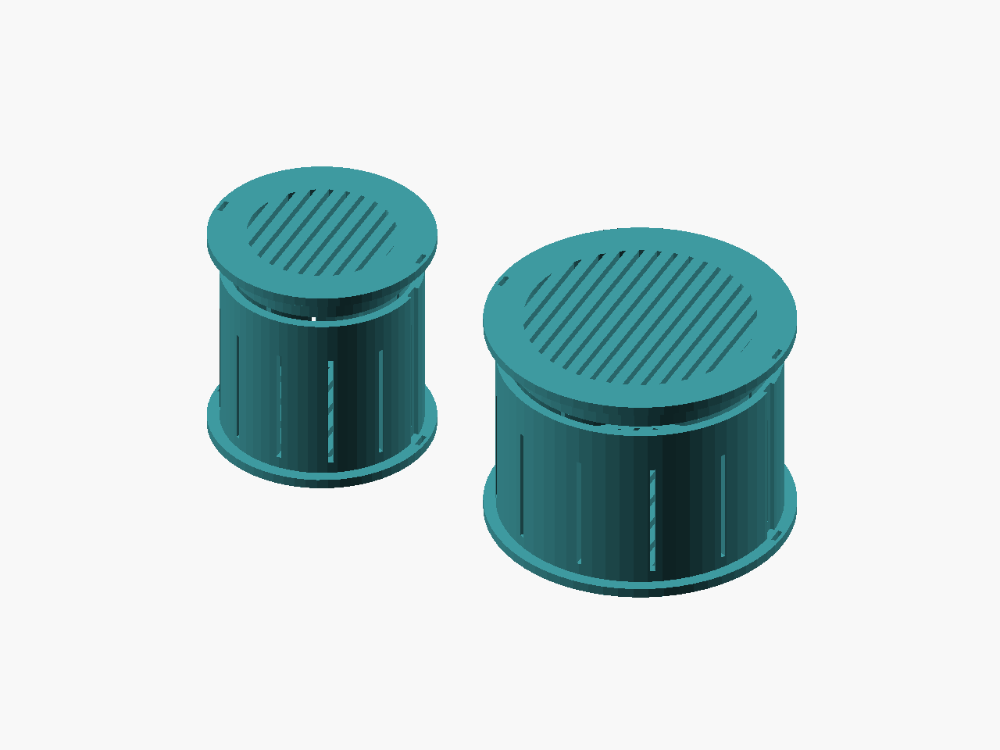
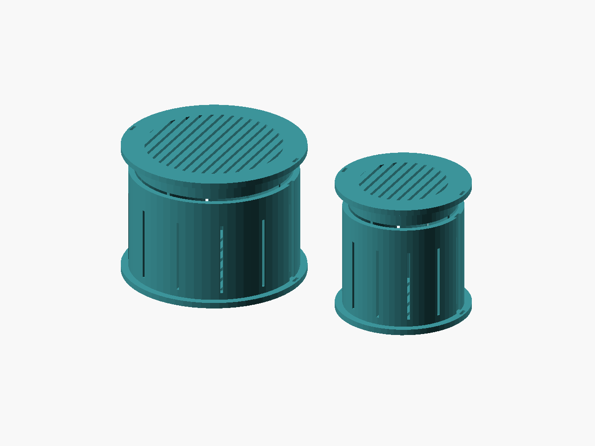

Filament care / v1
Drywell
Give the empty spool core a job.
Vented baskets for intact desiccant sachets, with sliding caps and two core sizes.


- Delivery
- Digital ZIP
- Included
- 6 STL files + source
- License
- CC-BY-4.0 models / MIT source
- Price
- TBD — sales not open
TODO: Etsy listing URL and price. This preview link does not open checkout. No purchase is available yet.
Digital files only. No printed parts, filament, tools or hardware are supplied. AI-assisted CAD scripting was used.
Start small. Check the fit.
Print the matching short coupon and cap first. Secure the cap with two thin ties. Use intact sachets only; no seal, drying performance or loose-bead containment is claimed.
No physical print or fit test has been performed. Print settings are starting points.
01 / THE DESIGN
Useful details, open to adjustment.
Drywell parks an intact desiccant sachet inside an unused spool-core opening. A bottom flange supports the cup; a separately printed cap slides into its mouth. Narrow vents in the wall and both end disks expose the sachet to the dry-box air. This is a sachet basket, not a seal or a filament dryer.
Choose a measured 50 or 70 mm clear spool core. Cup outside diameters are 49.2 and 69.2 mm, with a 45 mm insertion depth; end lips are 55.2 and 75.2 mm. Total core gap is 0.8 mm. The cap collar has 0.4 mm total diametral clearance. Print the short core coupon and matching cap first. Tune both gaps for your printer; the cap is a sliding fit and is not latched. Two aligned 1.2 x 4 mm slots in each lip and recessed side lanes accept thin ties; secure both sides before moving the insert.
Print each part with its broad disk on the bed in PETG or PLA, 0.20 mm layers, 4 walls, 25% gyroid, 5 top/bottom layers, supports off. Use dry, intact sachets only: 1.2 mm vents do not guarantee retention of loose beads or dust. Keep vents clear. Measure internal cup space before choosing a sachet. Remove the insert before spool use if it interferes with an axle, roller, or side clearance. Remove desiccant for regeneration in suitable equipment; do not heat this printed basket.
02 / PRINT NOTES
A starting point for your printer.
- Material
- PETG
- Alternative
- PLA for cool dry boxes
- Nozzle / layer
- 0.4 / 0.20 mm
- First layer
- 0.20 mm
- Walls
- 4
- Infill
- 25% gyroid
- Top / bottom layers
- 5 / 5
- Supports / brim
- Off / 0 mm
- PLA nozzle / bed
- 210 / 60 °C
- PETG nozzle / bed
- 240 / 80 °C
Orientation
Cup bottom flange down. Cap broad vent disk down; collar points up. Print separately.
Unverified starting points; use filament and printer guidance, tune coupons.
Preserve the shared library path when editing OpenSCAD. Adjust the fit parameter and re-export; do not scale the entire STL to fix a clearance.
Read the printing FAQ03 / DIMENSIONS
Measure before you make.
Nominal CAD bounds in millimetres. Physical print dimensions will vary.
| Export | Role | X × Y × Z (mm) |
|---|---|---|
drywell-50mm-cup | part | 55.2 × 55.2 × 45 |
drywell-50mm-cap | part | 55.2 × 55.2 × 9.4 |
drywell-50mm-coupon | coupon | 55.2 × 55.2 × 10.4 |
drywell-70mm-cup | part | 75.2 × 75.2 × 45 |
drywell-70mm-cap | part | 75.2 × 75.2 × 9.4 |
drywell-70mm-coupon | coupon | 75.2 × 75.2 × 10.4 |
04 / IN THE ZIP
The files travel together.
40 files · 397.5 KiB · release v1. STL variants, editable source and shared library, two-angle CAD renders, dimension guide, print settings, licenses, platform draft copy, validation snapshot and checksums.
See the exact package contents
- LICENSE
- README.txt
- SHA256SUMS
- VALIDATION.json
- catalog.json
- designs/desiccant-hub/README.md
- designs/desiccant-hub/desiccant-hub.scad
- designs/desiccant-hub/dimensions.svg
- designs/desiccant-hub/listings/makerworld.json
- designs/desiccant-hub/listings/makerworld.md
- designs/desiccant-hub/listings/printables.json
- designs/desiccant-hub/listings/printables.md
- designs/desiccant-hub/print-settings.json
- designs/desiccant-hub/renders/drywell-50mm-cap-front.png
- designs/desiccant-hub/renders/drywell-50mm-cap-rear.png
- designs/desiccant-hub/renders/drywell-50mm-coupon-front.png
- designs/desiccant-hub/renders/drywell-50mm-coupon-rear.png
- designs/desiccant-hub/renders/drywell-50mm-cup-front.png
- designs/desiccant-hub/renders/drywell-50mm-cup-rear.png
- designs/desiccant-hub/renders/drywell-70mm-cap-front.png
- designs/desiccant-hub/renders/drywell-70mm-cap-rear.png
- designs/desiccant-hub/renders/drywell-70mm-coupon-front.png
- designs/desiccant-hub/renders/drywell-70mm-coupon-rear.png
- designs/desiccant-hub/renders/drywell-70mm-cup-front.png
- designs/desiccant-hub/renders/drywell-70mm-cup-rear.png
- designs/desiccant-hub/renders/kit-front.png
- designs/desiccant-hub/renders/kit-rear.png
- designs/desiccant-hub/stl/drywell-50mm-cap.stl
- designs/desiccant-hub/stl/drywell-50mm-coupon.stl
- designs/desiccant-hub/stl/drywell-50mm-cup.stl
- designs/desiccant-hub/stl/drywell-70mm-cap.stl
- designs/desiccant-hub/stl/drywell-70mm-coupon.stl
- designs/desiccant-hub/stl/drywell-70mm-cup.stl
- docs/CC-BY-4.0.txt
- docs/LICENSING.md
- docs/PLATFORM-LIMITS.md
- docs/PRINT-ACCEPTANCE.md
- docs/SOURCES.md
- evidence/platform-limits.json
- lib/common.scad
Package: goblin-workbench-desiccant-hub-v1.zip
SHA-256: 563b5ed450bf750546744a530fbdcaacbb01552921ac9922c8000adfc972a352
05 / MAKE IT YOURS
Share it. Change it. Credit the workbench.
CC-BY-4.0 permits sharing and adaptation, including commercial use, with attribution, a license link and an indication of changes. Do not imply endorsement or add legal or technical restrictions that prevent the licensed uses. Editable source is MIT.
Read the license summary and full terms
Designed by Goblin Workbench — Drywell, v1. CC-BY-4.0. Changes: describe your modifications or state “unmodified.”